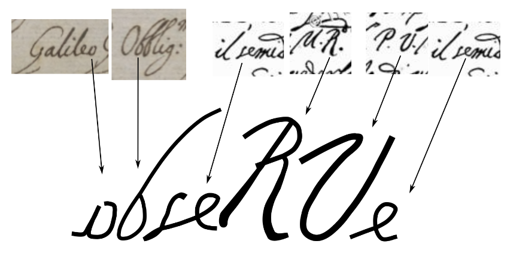

Sobre o obseRVe
O obseRVe foi formado no ano de 2023 a partir da união de várias ações envolvendo o ensino e a divulgação de astronomia que vem ocorrendo no campus de Araras da UFSCar desde a fundação do Curso de Licenciatura em Física no ano de 2009.
Logotipo
Para a escolha do logotipo do grupo, pensamos em algo que refletisse o tipo de atividades e ferramentas que utilizamos em nossos trabalhos.
Por um lado, tratamos dos conhecimentos básicos da Astronomia desbravados por pensadores como Galileu Galilei. Por outro, estudamos tecnologias que tornem esses conhecimentos mais sensoriais, cativantes e contemporizados.
Daí surgiu a ideia de consultar a caligrafia original de Galileu em documentos históricos e copiar as letras apropriadas para formar a palavra obseRVe.

Quanto à palavra em si, buscávamos algo simples e direto, com grafia semelhante em várias línguas ocidentais e que, obviamente, remetesse a algum aspecto fundamental da Astronomia.
Nesse sentido, a palavra obseRVe surge no imperativo como um convite ao fazer, ao experimentar e à ação, ensejando, ao mesmo tempo, a contemplação – características ancestrais desta que é uma das mais belas das ciências.
Por fim, temos as letras maiúsculas “R” e “V” diferenciando-se das demais em alusão à sigla para “Realidade Virtual”, fazendo a ponte com as tecnologias que abrem novas perspectivas de experiências e interações muitas vezes inviáveis – financeiramente ou tecnicamente – de serem realizadas no mundo físico.
Histórico
- 2009:
- Inaugurado o evento Jornada das Estrelas pelo Prof. Alexandre Colato. Desde o início o astrônomo Dr. Gustavo Rojas apoia o evento com palestras, orientações e trazendo sua equipe e telescópios de São Carlos.
- Realização da II Jornada das Estrelas no 2º semestre.
- 2010:
- Realização da III Jornada das Estrelas.
- Prof. João Teles se une ao Prof. Alexandre a partir da IV Jornada das Estrelas.
- 2011:
- São adquiridos os dois primeiros telescópios: Maksutov Nextar 4SE e Dobsoniano com recursos do CCA/UFSCar.
- Realização da V Jornada das Estrelas.
- 2012:
- É aprovado o projeto (edital PROEXT/MEC) “Universo em movimento – diferentes abordagens no ensino e divulgação da astronomia” em parceria com o Prof. Adilson de Oliveira.
- Realização da VI Jornada das Estrelas.
- 2012 e 2013 – Foram realizadas diversas ações dentro do projeto “Universo em movimento”:
- Curso de formação inicial e formação continuada em “Astronomia voltada para a Educação Básica”.
- Realização da VIII e IX Jornada das Estrelas em 2013.
- Exposições de Astronomia na Biblioteca Municipal de Araras.
- Exposições de Astronomia nas Escolas de Ensino Fundamental e Médio de Araras.
- Participações no Programa International Astronomical Search Collaboration (IASC).
- Participação no programa Globe at Night em parceria com a Profa. Lilia C. P. Thomaz na E.M.E.F. Prof. Joel Job Fachini pelo PIBID.
- 2014:
- É desenvolvida a atividade Medindo a distância da Terra à Lua dentro do projeto “Diversificação curricular: possibilidade de aperfeiçoamento e valorização da formação de futuros professores de física” pelo Programa Licenciaturas Internacionais coordenado pelo Prof. Paulo C. de Faria em parceria com a Universidade de Aveiro, Portugal.
- É aprovado o projeto PROEXT/MEC “Sementes - Integração de estratégias e metodologias voltadas à consolidação da cultura científica visando a inclusão social” novamente em parceria com o Prof. Adilson, agora como coordenador principal, e envolvendo ações e parcerias com todos os campi da UFSCar.
- 2014 e 2015 – As ações realizadas dentro do projeto “Sementes” mais especificamente voltadas à cidade de Araras foram:
- Parceria universidade-escola com o Prof. Alexandre Barai envolvendo “Divulgação de conhecimentos de Astronomia no contexto da Olimpíada Brasileira de Astronomia”.
- Ofertas das ACIEPEs “Divulgação de conhecimento de Astronomia e Astronáutica” voltadas a professores em formação e em exercício.
- Aquisição do telescópio Schmidt-Cassegrain equatorial C6S.
- Realização da X e XI Jornada das Estrelas.
- 2015 :
- É inaugurado o Observatório a Olho Nu do CCA/UFSCar.
- São construídos os globos celeste e terrestre de 75 cm de diâmetro.
- Realização da XII Jornada das Estrelas.
- Realização da I Jornada do Sol em pareceria com o Prof. Fabrizzio Montezzo e o Prof. Dirceu Nardone do grupo Gearc.
- Participação no evento Escola de Astros realizado na Unesp de Rio Claro.
- 2016:
- Realização da ACIEPE Ensino de astronomia através da participação no International Astronomical Search Collaboration (IASC) que teve a inscrição de 80 estudantes do Ensino Médio de Araras e outras localidades do estado de SP.
- É adquirida a câmera para astrofotografia ZWO ASI290MC.
- Realização da XIII Jornada das Estrelas.
- 2017: Realização da XIV Jornada das Estrelas.
- 2018: Início do desenvolvimento do Projetor Estelar.
- 2019: Realização da XV Jornada das Estrelas.
- 2020: Oferta do curso de extensão “Astronomia voltada para a Educação Básica” de forma remota durante a pandemia de Covid-19 que recebeu mais de 100 inscrições de várias cidades do Brasil.
- 2022:
- Conclusão do hardware e software do Projetor Estelar e finalização de pesquisa de mestrado envolvendo sua utilização no ensino de astronomia.
- Realização da XVI Jornada das Estrelas.
- 2023:
- É iniciado o projeto CNPq “Astronomia e cultura astronômica: do céu real ao céu virtual” em parceria com o Prof. Vitor Coluci da FT-Unicamp.
- Realização da XVII Jornada das Estrelas.
- Criação do grupo obseRVe e adesão do Prof. Sílvio Dahmen ao grupo.
{kind=link}
Financiamento
Atualmente o grupo obseRVe é financiado pelo CNPq por meio da Chamada CNPq/MCTI/FNDCT 39/2022 “Programa de Apoio a Museus e Centros de Ciência e Tecnologia e a Espaços Científico-Culturais” (processo 407086/2022-6) dentro da Linha 3: Divulgação Científica e Educação Museal.